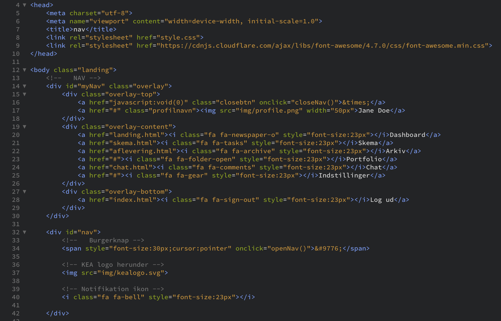
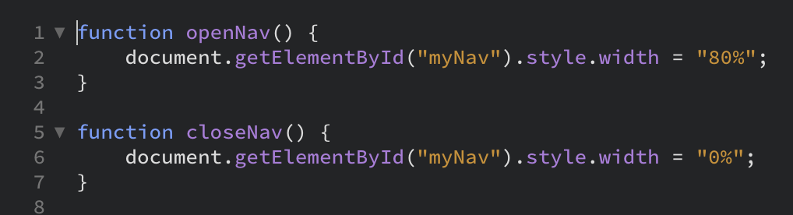

UX // Web Prototype
Nyt Fronter
gruppeprojekt
I grupper fik vi den opgave at lave en web prototype med KEAs fronter som case. Forinden havde vi fået den individuelle opgave at lave usability tests (brugertests) af Fronter ved at invitere tre personer til at teste platformen. Man giver testbrugeren nogle opgaver der skal gennemføres, mens brugeren bliver video- og lydoptaget undervejs. Forinden bliver brugeren orienteret om at det er platformen der testes og ikke brugeren, samt at brugeren bedes tænke højt undervejs. Det vil sige at fortælle hvad man tænker og føler. På den måde kan man se hvilke problemer, forhindringer eller forvirringer der skabes.
Ikke overraskende var der rigtig mange ulemper ved det nuværende Fronter og det leder til, at vores gruppe skulle forandre dette med en ny platform – men vi skal denne gang blot lægge ud med en web prototype, for at se om kunden vil købe det.
Vi modtog en video med kunde-feedback, som vi skulle arbejde ud fra og følge.

Arbejdstruktur
Til at starte med oprettede vi i gruppen et Team Canvas som vi i fælleskab udfylder. Nogle punkter skulle man skrive egne mål og forventninger. Canvaset hjælper os at komme på samme gear og have samme mål – en slags kontrakt mellem os.
Her ser i vores Team Canvas.

Udvalgt kodning
Jeg vil gerne uddybe kodningsdelen ifm. slide-in menu, som jeg har skrevet. Jeg fandt denne brugbare side på W3Schools, som jeg kopierede og redigere til så det passede til vores navigation som blev lavet i Adobe XD.
At udvikle dette krævede at man brugte både html, css og javascript. Det var et bevidst valg, da opgaven også krævede at man brugte alle 3 dele – men det var faktisk til min fordel, da jeg anser det er nemmest at arbejde på tværs af disse dele. De gav mig frirum til at tilpasse det efter vores forventninger. Se kodningsdelen herunder.
HTML
I html selve menuen er der delt op i tre wrappere i en container med id’en “myNav”. De tre wrapper indeholder profil-felt (personlig felt), selve menuen og så log ud knap.
I HTML’en er der sørget for hvad der står i de respektive menu-punkter. Om burger- og lukke-knappen er der opsat sådan, at hvis man klikker på dem så aktiverer man henholdsvis openNav() og closeNav() i javascriptet.
Som ikoner bruges der FontAwesome som er en gratis skrifttype bestående af symboler. Den importeres via link rel i header.
CSS
I CSS delen har jeg angivet de 3 wrapper til at flexe, samt angivet farver og størrelser. Da vi skulle arbejde mobilefrist/only, så er der kun taget højde for mobile bredder. Der er også setup for animation for selve boksen, som giver den slide right funktion.
Javascript
Javascriptet er ret simpel. Når funktionen openNav er aktiveret giver den myNav en bredde på 80%. 0% gives når closeNav aktiveres.